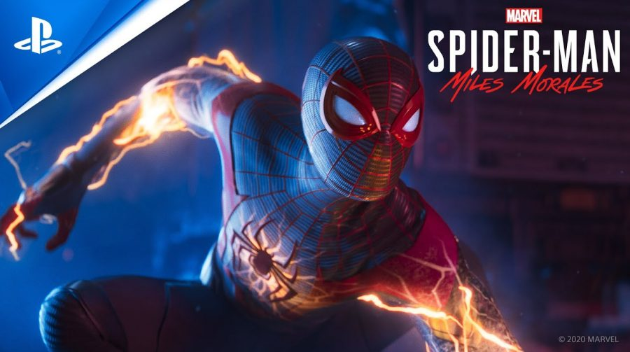

God of War Ragnarök
God of War Ragnarök é um futuro jogo eletrônico de ação-aventura desenvolvido pela Santa Monica Studio e publicado pela Sony Interactive Entertainment. Está programado para ser lançado em 9 de novembro de 2022 exclusivamente para PlayStation 4 e PlayStation 5.
Fifa 23
FIFA 23 será o próximo jogo eletrônico de simulação de futebol em desenvolvimento pela Electronic Arts. O jogo é o último a utilizar a marca FIFA no nome e será lançado dia 30 de setembro de 2022, para Xbox Series S/X, Xbox One, PlayStation 5, PlayStation 4 e Microsoft Windows.
Spider-Man: Miles Morales
Spider-Man: Miles Morales é um jogo eletrônico de ação-aventura desenvolvido pela Insomniac Games e publicado pela Sony Interactive Entertainment para o PlayStation 4 e PlayStation 5.
Far Cry 6
Far Cry 6 é um jogo eletrônico de tiro em primeira pessoa desenvolvido pela Ubisoft Toronto e publicado pela Ubisoft. É o sexto título principal da série Far Cry e foi lançado em 7 de outubro de 2021 para Amazon Luna, Google Stadia, Microsoft Windows, PlayStation 4, PlayStation 5, Xbox One e Xbox Series X/S.